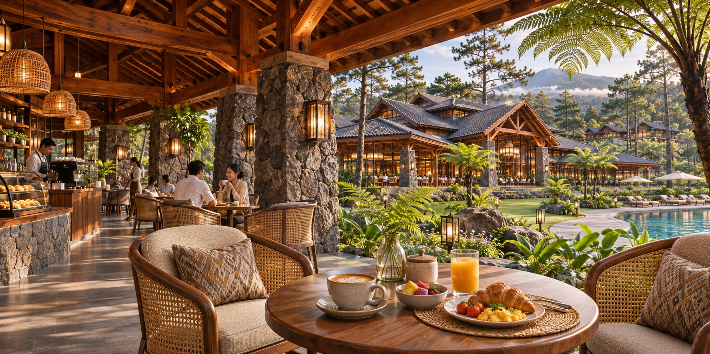

The Main Lodge
Grand in scale.
Warm at heart.
A family of welcoming spaces in volcanic stone and timber.
The Mount Paradise vision
The Main Lodge
The Main Lodge is envisioned as the social heart of Mount Paradise. Layered rooflines, garden courts and deep verandas give a substantial destination the intimacy of a lodge. A grand lobby, restaurant, café, bar and event spaces sit alongside quieter future rooms and suites.

Arrival & lobby
A generous
first welcome.
On the arrival side, a generous landscaped forecourt and sheltered porte cochère welcome guests into the grand lobby. Hotel wings extend behind connected pavilions, with garden courts breaking down the scale and covered paths linking the whole lodge.

The restaurant
The pleasure
of a beautiful table.
A dining room for long lunches, family occasions and memorable evenings. Rich stonework, exposed timber and garden-facing windows establish the material character of the destination.

Café & terraces
Morning coffee.
Afternoon conversation.
Broad sheltered terraces create places to sit throughout the day. The café opens into the landscape, with small tables, comfortable chairs and the feeling of being part of a larger garden.

The hotel vision
A quieter wing.
A longer stay.
The hotel vision grows directly from the Main Lodge: a collection of connected wings stepping through the gardens, with an ambition of more than 100 rooms, including generous suites. Balconies and terraces would open toward mountain outlooks on both sides of the ridge. Cabins and private lodges sit farther out across the wider destination, primarily as privately owned homes, with selected rental stays a possibility.